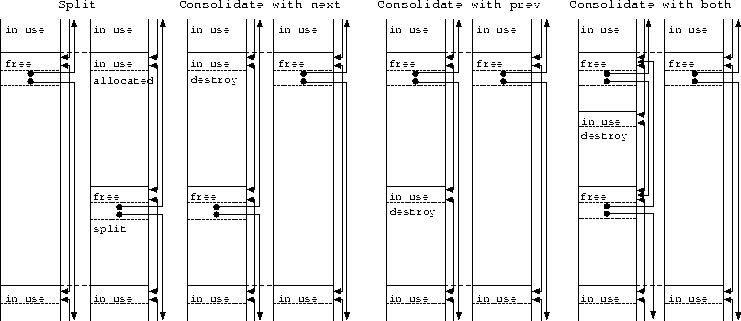

Next: Mapping
Up: Arena Class
Previous: Other Members
There are several primitive operations for the allocation. Some of them
are shown in the Figure 3.13.
Figure 3.13:
Primitive Operations of Allocation
|  |
- The findChunk()
- private operation picks up an appropriate free
Chunk from the freeList by tracing the list.
- The split()
- private operation (See Figure 3.13)
splits the free Chunk picked up by the findChunk and generates
a newly allocated Chunk. If the split free Chunk were smaller
than the minimum size of chunks in the Arena, the operation
would not actually split the free Chunk and allocate the whole
Chunk instead.
- The splitTopChunk()
- private operation is similar to the
split operation. The difference is that this primitive operation
is invoked when there are no appropriate free Chunks in the
freeList, and it splits the topChunk instead.
- The destroyChunk()
- private operation destroys an allocated
Chunk and restores it to the freeList. There are four types
of destruction operations depending on the usage of the immediate
Chunks. If the immediate Chunks are not in use, the Chunk
is just inserted into the freeList. If any of the immediate
Chunks are free, this operation consolidates them into a single
Chunk (See Figure 3.13).
- The consolidateIntoTopChunk()
- private operation is invoked
after the destroyChunk operation. If the previous Chunk of the
topChunk has just been freed by the destroyChunk operation,
this primitive operation consolidates the Chunk with the
topChunk.
- The allocate()
- protected operation invokes the findChunk,
split, and splitTopChunk operations to generate a new
Chunk.
- The destroy()
- protected operation invokes the destroyChunk
operation and the ConsolidateIntoTopChunk operation to restore an
allocated Chunk to the free Chunks.
Next: Mapping
Up: Arena Class
Previous: Other Members
Mori Tetsuya / t2y3141592@gmail.com